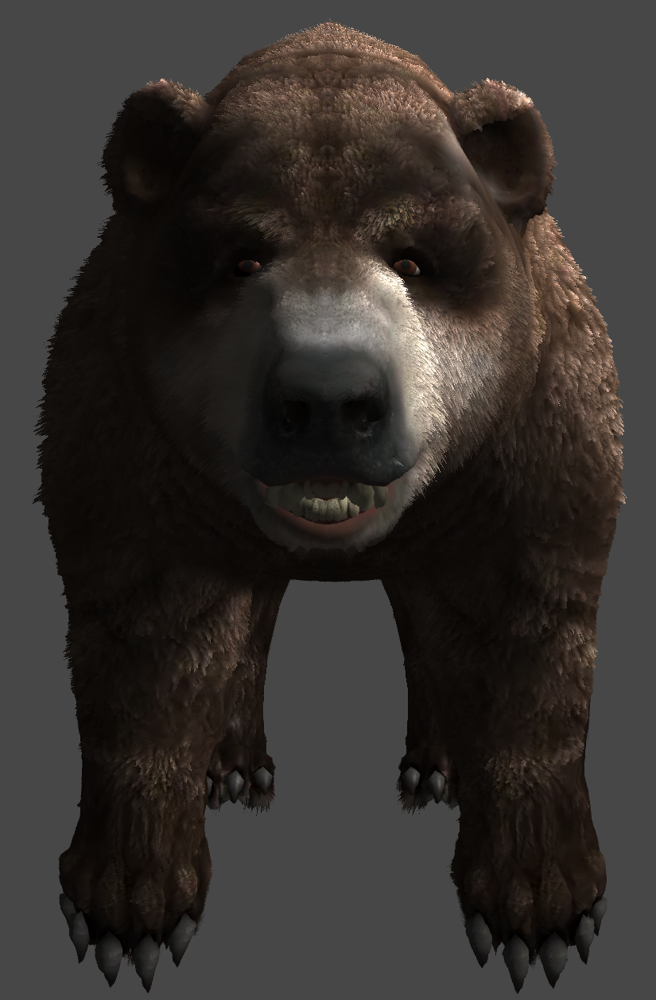

Abstract
In this project, we set out to build custom BSDFs on top of the Mitsuba Renderer in order to realistically render hair. Using the existing framework, which provided simple ray-hair intersection functionality, we successfully implemented Kajiya Kay hair rendering. Further, we explored WebGL dynamic fur shading using three.js, and built a web-hosted interactive demo.
Technical Approach
We created a brand new BSDF in Mitsuba. Mitsuba provided the framework for ray tracing and hair intersection. Mitsuba came with a Kajiya Kay styled phase function. However, this is not a fully functional BSDF, and did not match up with the paper we read. Thus, we ultimately decided not to use it, and instead build our own BSDF from scratch.
The basics of the Kajiya Kay BSDF are as follows. First, we define the following vectors:
- t: tangent vector to the hair cylinder
- l: directional vector from intersection to light source
- e: directional vector from intersection to eye/camera
Next, we define three constants that control the lighting effects of the rendered image.
- Ks: scaling factor for specular lighting component
- Kd: scaling factor for diffuse lighting component
- p: exponent for specular lighting component
As shown in the model below, the incoming light is specularly reflected into the cone formed by taking the incoming light vector, reflecting it over the normal, and rotating it around the tangent. This outgoing ray is drawn with the label e'.

|
Next, we calculated the diffuse and specular terms, setting pointers as necessary. The images below describe how these terms are discerned in the original model, and the pseudo-code equations that follow demonstrate how we broke down each term in order to make our code simpler and more readible.
- Ψdiffuse = Kd * sin(θ) = Kd * ||cross(t, l)||
- Ψspecular = Ks * cos(θ’ - θ)P = Ks * (cos(θ’)cos(θ) + sin(θ’)sin(θ))P = Ks * [ dot(t, l) * dot(-t, e) + ||cross(t, l)|| * ||sin(-t, e)|| ]P

|
|
The next BSDF we sought to implement was the Marschner model. In it, hair follicles are modeled as rough, cylindrical surfaces consisting of tilted cuticle scales. This model takes into account the detail that incident light may be reflected one or more times before exiting the hair. Therefore, reflection is broken down into three components:
- R: simple reflection
- TT: one transmission
- TRT: two transmissions
The details of this process are best described by the diagrams below:
|
|
|
We tackled this problem by considering each scattering component individually, and summing them together, as represented by the scattering function f.
|
|

|
Each component is broken down into three major components, each of which are calculated based on the incoming and outgoing angle of reflectance. These are outlined below:
- Mp: describes the longitudinal scattering function.
|
|
- Ap: describes how incident light affects a scattering mode p. This component considers Fresnel reflection, transmission at hair-air boundary, and absorption (for p > 0i>). It is responsible for the color of the hair fiber.
|
|
- Np: describes the angular difference between the angle Φ and the third function shown below, which calculates the net change in azimuthal direction.
|
|
Lastly, we implemented our stretch goal of dynamic fur shading using the three.js framework. In order to maximize performance, we utilize the "shell and fin" approach to dynamic fur rendering. This method uses multiple layers, or "shells," of the mesh and stacks them at different scales in order to simulate individual hair/fur fibers. Pixels are rendered according to a randomly generated hair distribution texture map at each layer. Starting from a simple bear model with a standard diffuse shader, as shown below, we constructed a photo-realistic and dynamically rendered interactive demo.
|
|
Initially, the fur was rigid and linear, with no deformation or correction due to gravity or the surface normals. This led to an unrealistic model. Therefore, we defined methods to align the hair fibers to the surface normal, and also to correct for gravity, within the vertex shader.
vec3 augmented = position + vec3(fNormal) * vec3(scaling, scaling, scaling);
gl_Position = (projectionMatrix * modelViewMatrix * vec4(augmented, 1.0))
+ (vec4(displacement, 0.0) * vec4(dFactor, dFactor, dFactor, 0.0));
Lastly, to more accurately model the finer characteristics of fur, we needed to add shadows, sheen, and some controlled randomness. First, we tackled realistic shadows by implementing Phong shading. Since the shell-based fur fibers have no mesh or sense of normals, we needed to think out of the box in order to model shadow intersections. Therefore, we ultimately figured out that altering the Phong light intensity on a per-pixel level produced the most accurate image. To calculate the relative height of a fur fiber from the root, we took the layer number and divided it by the surface ratio.
Our final improvement came after noticing that random fiber lengths are unrealistic and unexciting at such a high frequency/resolution image (2048x2048). Therefore, we multiplied the specularity texture map and noise to create visually interesting, random hairs. After these improvements, we produced the following results:
|

|

|
The detail and realism achieved by this method can be better seen and appreciated in our live demo, linked below in the Results section.
Results
Here are some high-quality renders that we produced using the Mitsuba Renderer and our custom BSDFS. All renders were done with 4 samples per pixel, and 32 samples per light.
|
|
|
|
|
|
|
|
Here are some other scenes that demonstrate the realism of our hair BSDF. They are rendered with identical parameters (4 samples per pixel, 32 samples per light).
|
|
|
|
|
|

|
|
Lastly, below we provide a link to our dynamic fur shading demo and a video outlining the results of our final project.
Live Demo of Dynamic Fur ShadingINCLUDE LINK TO VIDEO
Resources and References:
Computing Platforms:
- MacOS High Sierra (v 10,13,3), Shen
- Ubuntu 16.04, Briggs + Xia
- Windows 10, Briggs (for GTX 1080)
Hardware:
- NVIDIA GPUs: GTX 1060s + GTX 1080
Software:
- Mitsuba Renderer
- Built using Mitsuba as a basic foundation for ray-tracing and ray-hair intersection: http://mitsuba-renderer.org
- C++ language and standard libraries
- Standard development IDEs
- WebGL for dynamic hair/fur rendering
References:
- Kajiya-Kay Model, SIGGRAPH, '89:
https://www.cs.drexel.edu/~david/Classes/CS586/Papers/p271-kajiya.pdf
- Not very photorealistic
- Low polygon approach to hair rendering, combines low-poly patches (not cylinders) with diffuse, ambient-occlusion, and specular values to model hair: http://amd-dev.wpengine.netdna-cdn.com/wordpress/media/2012/10/Scheuermann_HairSketchSlides.pdf
- Mitsuba Renderer, implements ray tracing hair curvature already: http://mitsuba-renderer.org
- WebGL interactive/dynamic fur rendering using three.js and this article: http://oos.moxiecode.com/js_webgl/fur
- Human Hair vs. Animal Fur:
https://cs184.eecs.berkeley.edu/lecture/advanced-materials/slide_043
- Medulla small in humans, larger in animals, exaggerated in softer/higher brightness fur
- Disney's fur rendering model: https://benedikt-bitterli.me/pchfm/pchfm.pdf
- "An Energy Conserving Hair Reflectance Model", http://www.eugenedeon.com/wp-content/uploads/2014/04/egsrhair.pdf
- Zinke-Weber: "Light Scattering From Filaments" (2007)
Contributions
- Jonathan Briggs: Focused mainly on Marschner implementation, but some assistance with Kajiya-Kay method. Fixed compile errors and compatibility issues with Mitsuba Renderer. Wrote HTML documents for project proposal and final report. Contributed to final presentation slides. Recorded videos for project milestone and final report.
- Nick Shen: Focused mainly on three.js implementation, but some assistance with Kajiya-Kay method. Wrote HTML document for project milestone. Contributed to final presentation slides. Recorded video for final report.
- Xiling Xia: Focused mainly on Kajiya-Kay implementation, but some assistance with Marschner model. Contributed to final presentation slides. Helped with script for video included in final report.